ART, DESIGN & MATERIAL PRACTICE
Photography
A practice of looking: light, movement, small details, and the things that catch my eye.
12 works · Select an image to see it larger.

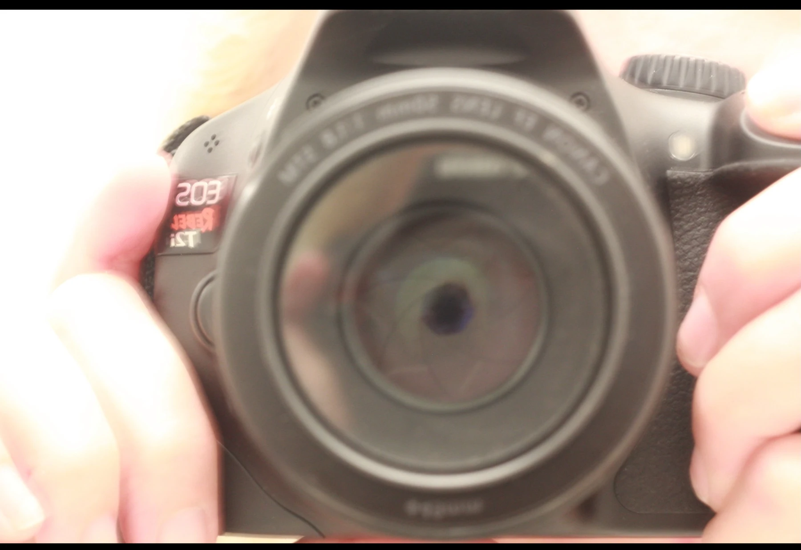

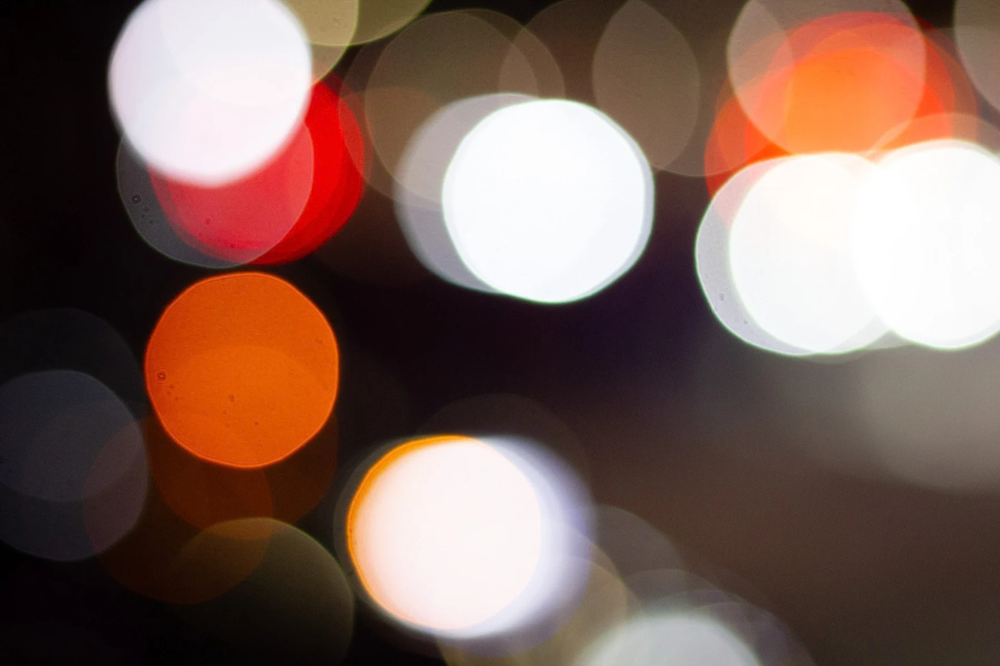

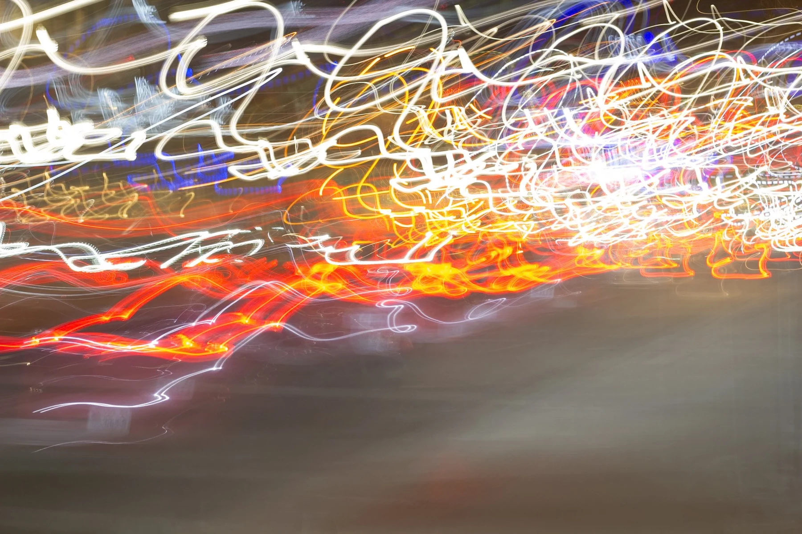

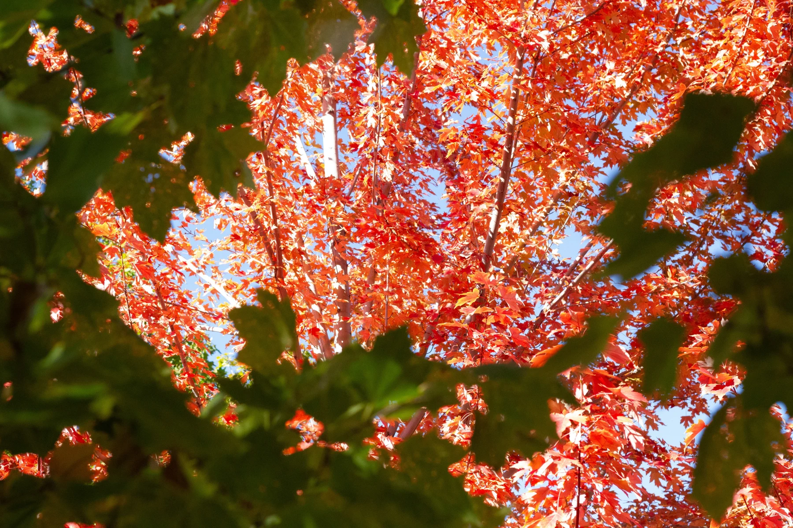

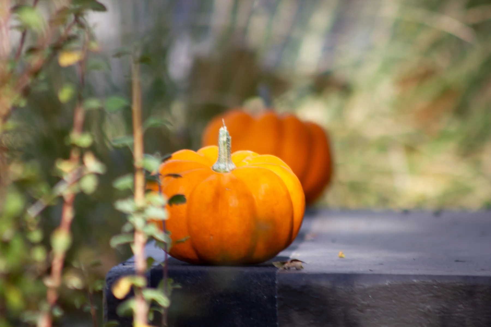

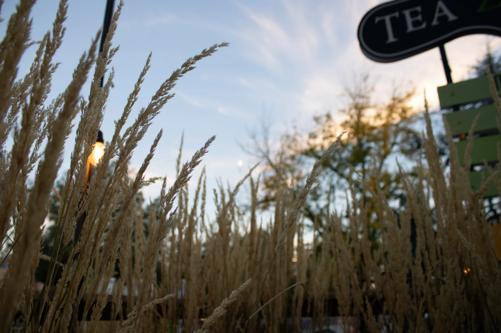

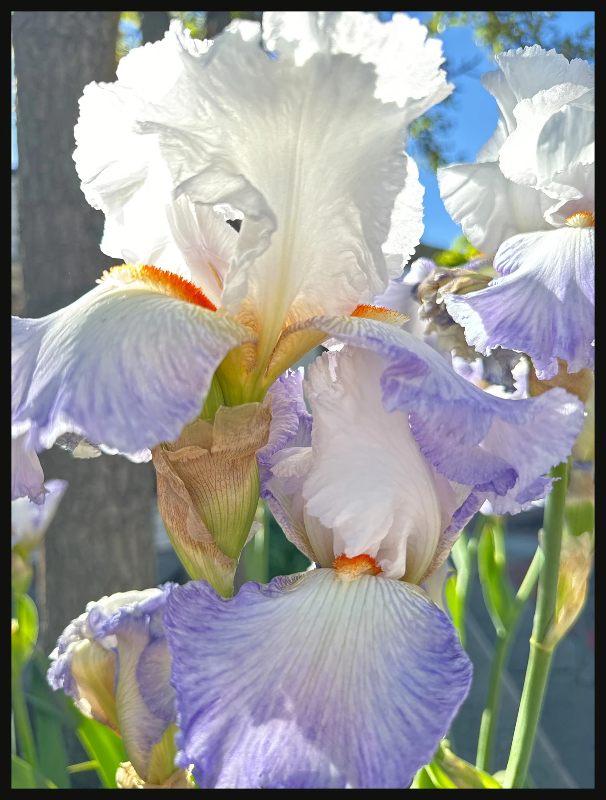

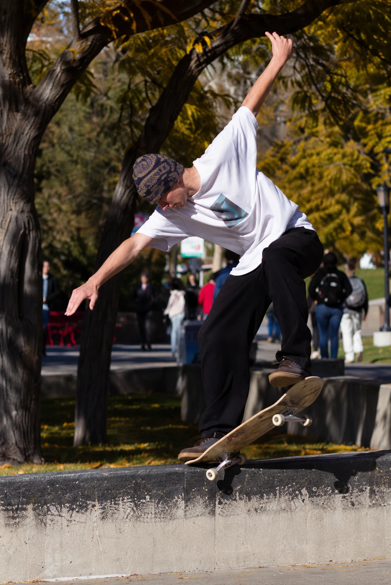

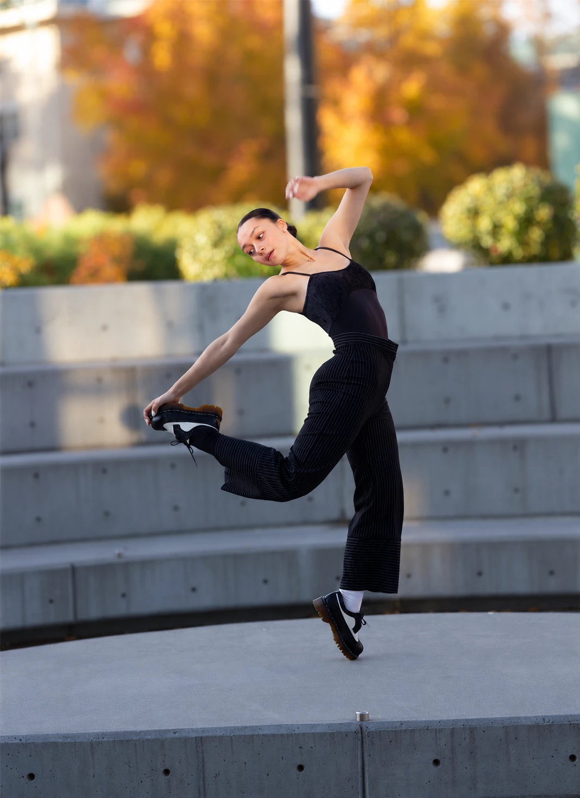

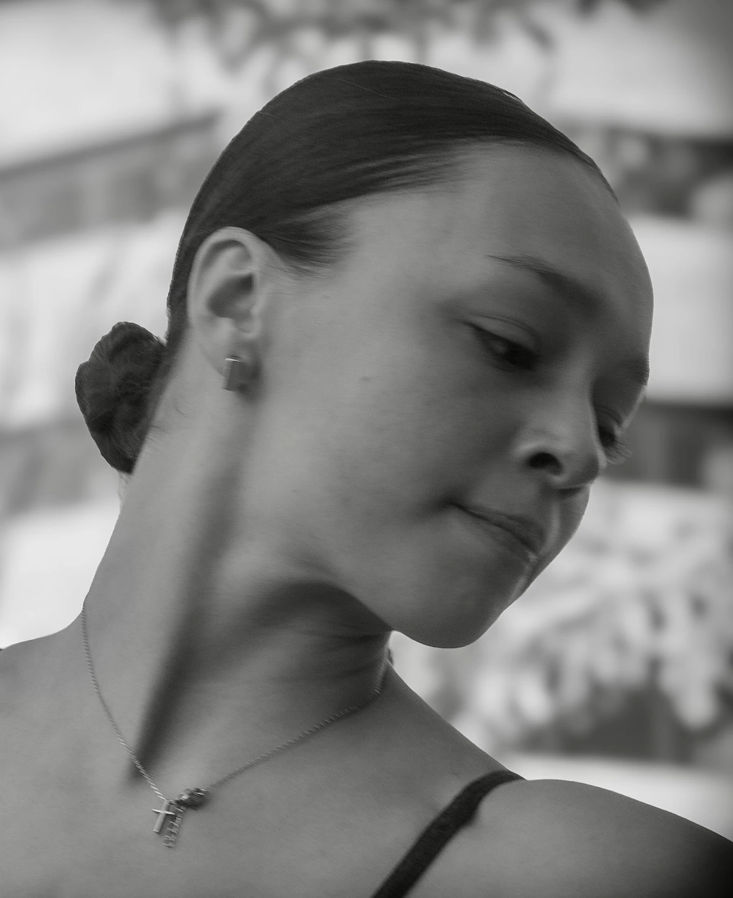

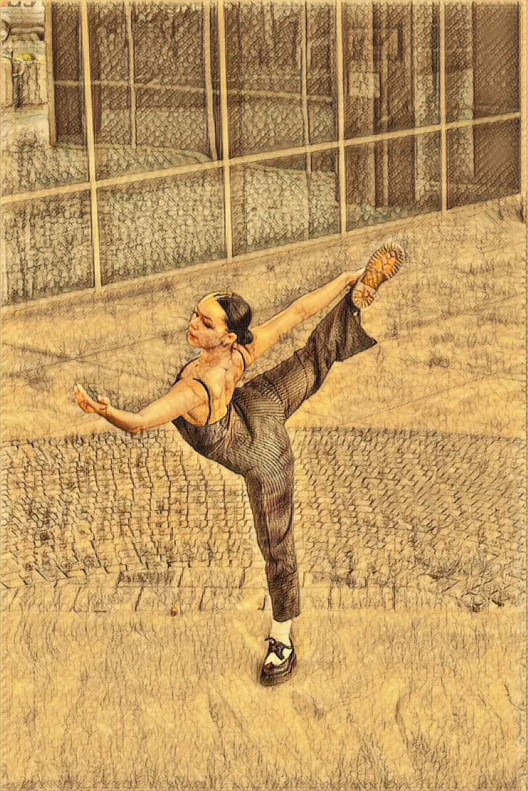

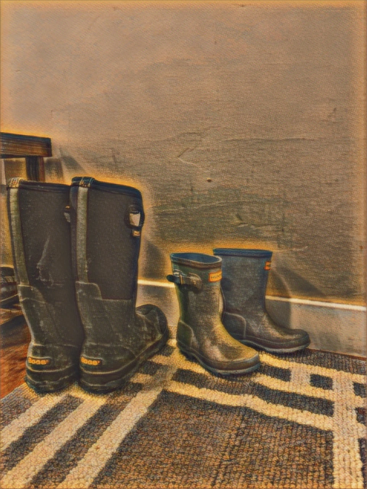
Descriptive captions identify untitled studies. Artwork and photographs © Sam Andrus-Henry.
Something taking shape?
For notebooks, custom work, workshops, or a conversation about making.
Get in touch ↗